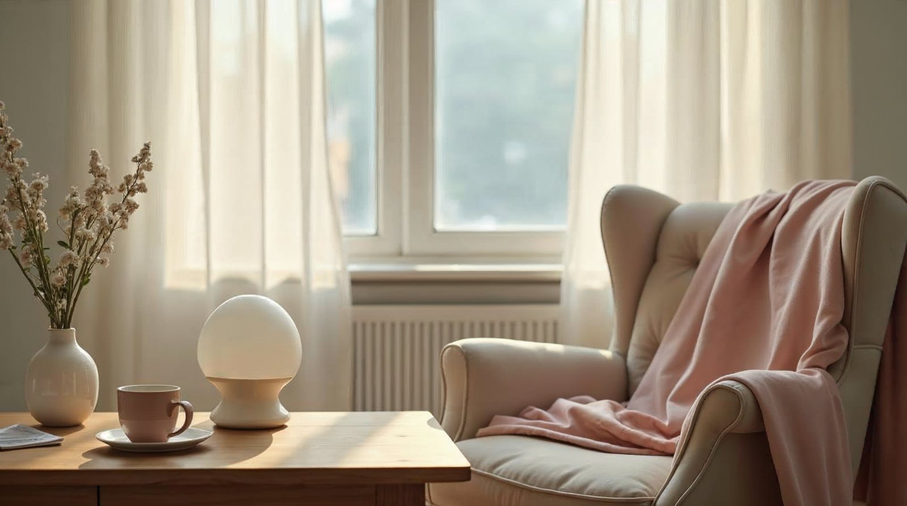
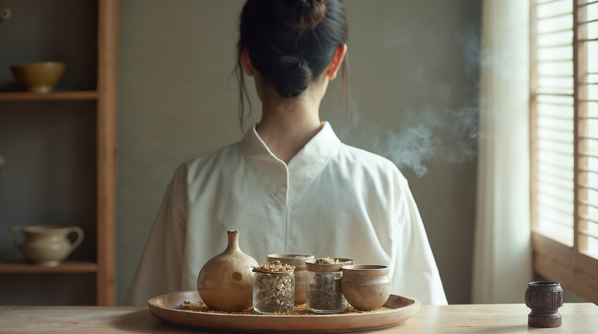

이종호 한의사 감수좋은꿈참사랑한의원 대표원장 (한의사 면허번호 19769)발행 2026-11-24 · 수정 2026-11-26
이 글의 차례
- 왜 이런 불편이 생길 수 있나요
- 마감 주에 잠이 흔들리는 것과 오래된 불면은 어떻게 다를까요?
- 먼저 이렇게 여쭙니다
- 일상에서 먼저 해 볼 수 있는 것
- 마감 2주 전부터 끝난 다음 주까지, 시기별로 무엇을 준비할까요?
- 귀가 후 잠들기까지 30분은 어떻게 보내면 좋을까요?
- 상황별 예시
- 술이나 야식으로 긴장을 푸는 날은 어떻게 할까요?
- 잠 말고도 몸이 보내는 신호를 함께 봐 주세요
- 스스로 점검해 보세요
- 바쁜 주에 낮잠은 어떻게 쓰면 좋을까요?
- 한의원에서 함께 살필 수 있는 경우
- 첫 방문에서는 무엇을 함께 정리하나요?
- 얼마나 지켜보고 언제 상담할까요
- 이렇게 기록해 오시면 상담이 쉬워집니다
- 마치며
- 이런 증상은 먼저 확인이 필요합니다
- 함께 읽으면 좋은 글
야근이 몰리는 주에는 잠드는 시각보다 일어나는 시각을 지키는 것이 잠을 덜 흔들리게 하는 데 도움이 될 수 있습니다. 장승배기와 대방, 노량진 쪽 사무실에서 일하시는 분들은 월말 결산이나 분기 마감, 연말 정산 시기가 오면 일주일 내내 늦게 퇴근한다고 하시는데, 바쁜 주가 끝난 뒤에야 잠이 무너진 것을 알아차리는 경우가 많습니다.
그래서 바쁜 주가 오기 전에 기상 시각, 카페인 마감 시각, 귀가 후 순서 세 가지를 미리 정해 두는 것부터 권합니다.
왜 이런 불편이 생길 수 있나요
- 늦게 퇴근한 날에도 업무 긴장이 남아 있으면 누워도 머리가 쉬지 못해 잠들기까지 오래 걸릴 수 있습니다.
- 야근 중 마신 커피나 에너지 음료가 밤까지 남아 잠을 방해하기도 합니다.
- 바쁜 주에 기상 시각이 들쭉날쭉하면 하루 리듬이 흔들려 바쁜 시기가 끝난 뒤에도 잠이 돌아오지 않는 분이 있습니다.
- 늦은 저녁과 야식은 속을 불편하게 해 잠을 얕게 만들기도 합니다.
- 늦게 들어온 날일수록 혼자만의 시간을 찾느라 휴대폰을 보며 잠을 더 미루게 되는 분도 있습니다.
마감 주에 잠이 흔들리는 것과 오래된 불면은 어떻게 다를까요?
마감 주에 잠이 줄고 얕아지는 것은 몸이 바쁜 일정에 맞춰 버티는 자연스러운 반응인 경우가 많습니다. 바쁜 주가 끝나고 1~2주 안에 잠드는 시각이 평소대로 돌아온다면 일시적으로 흔들린 잠으로 보고 생활 순서를 다듬는 데 집중합니다.
반대로 바쁜 시기가 지났는데도 누우면 일 생각이 멈추지 않고, 잠자리에 드는 것 자체가 걱정되기 시작했다면 이야기가 조금 달라집니다. 잠을 못 잘까 봐 긴장하는 마음이 다시 잠을 막는 흐름이 생겼을 수 있어, 이때는 잠의 모양을 더 자세히 들여다봅니다.
또 하나 나눠 보는 것은 잠을 충분히 잤는데도 낮에 졸린 경우입니다. 이때는 시간이 부족한 문제가 아니라 잠의 질이 떨어졌을 수 있어 코골이나 자다 깨는 횟수, 기분이 가라앉아 있는지까지 함께 여쭙습니다.
먼저 이렇게 여쭙니다
- 야근이 몰리는 시기는 보통 언제이고, 그 주에는 몇 시쯤 집에 도착하시나요?
- 야근할 때 커피나 에너지 음료를 하루에 몇 잔 정도 드시나요?
- 집에 도착해서 잠들기까지 보통 얼마나 걸리고, 그 사이에 무엇을 하시나요?
- 바쁜 주가 끝난 뒤 주말에 몰아서 주무시나요?
- 바쁜 주에 저녁 식사는 몇 시에, 어디서 드시나요?
일상에서 먼저 해 볼 수 있는 것
- 바쁜 주에도 아침 기상 시각은 평소와 1시간 넘게 차이 나지 않게 맞추기
- 카페인은 오후 이른 시간까지만 마시고 저녁 야근 때는 따뜻한 물이나 보리차로 바꾸기
- 귀가 후 '씻기, 가벼운 간식, 조명 낮추기'처럼 잠들기 전 순서를 세 단계로 짧게 정해 두기
- 다음 날 할 일은 퇴근 전에 메모로 적어 두고 집에서는 업무 메신저 알림 끄기
- 야근이 예정된 날은 저녁 7시 무렵 가벼운 한 끼를 먼저 먹고, 귀가 후에는 따뜻한 음료 정도로 마무리하기
- 바쁜 주가 시작되기 며칠 전부터 잠자리에 드는 시각을 미리 정해 두고 그 주에 지킬 것 한두 가지만 고르기
마감 2주 전부터 끝난 다음 주까지, 시기별로 무엇을 준비할까요?
- 2주 전: 지금의 기상 시각과 잠드는 시각을 사흘만 적어 두세요. 기준을 알아야 마감 주에 얼마나 밀렸는지 보입니다.
- 1주 전: 카페인을 마시는 마지막 시각을 정하고, 야근 날 저녁을 어디서 먹을지 회사 근처 두세 곳을 미리 골라 둡니다.
- 마감 주 중: 잠드는 시각은 밀려도 괜찮다고 마음먹고, 기상 시각과 아침 햇빛만큼은 지켜 봅니다.
- 마감이 끝난 주말: 늦잠은 평소보다 1시간 정도까지만 자고, 낮에 밖에 나가 30분쯤 걸어 보세요.
- 끝난 다음 주: 마감 주에 줄였던 운동이나 산책을 하나 되살리고, 잠이 언제 돌아왔는지 적어 둡니다.
이렇게 시기를 나눠 두면 바쁜 주 한가운데서 무엇을 지켜야 할지 고민하는 시간이 줄어듭니다. 저는 처음부터 다 지키려 하기보다 한 시기에 한 가지씩만 챙기시기를 권합니다.
귀가 후 잠들기까지 30분은 어떻게 보내면 좋을까요?
늦게 들어온 날 바로 누우면 몸은 피곤한데 머리는 아직 회의실에 있는 느낌이 든다는 분이 많습니다. 그래서 귀가 후 30분은 일에서 집으로 넘어오는 다리 같은 시간으로 생각해 보시면 좋습니다.
현관에 들어서면 가방과 휴대폰을 같은 자리에 내려놓고, 따뜻한 물로 짧게 씻어 몸의 긴장을 풀어 주세요. 그다음 거실 조명을 한 단계 낮추고, 목과 어깨를 천천히 돌리거나 숨을 길게 내쉬는 시간을 몇 분 가져 봅니다.
이 순서를 매번 같게 반복하면 몸이 '이제 쉴 시간'이라는 신호로 받아들이기 쉬워집니다. 순서가 길 필요는 없고, 지칠 때도 지킬 수 있을 만큼 짧은 것이 오래갑니다.
저는 잠이 흔들리는 분께 약을 생각하기 전에 생활 리듬부터 권합니다. 끼니를 날마다 비슷한 시간에 드시고, 저녁에 가볍게 걷고, 잠들기 1~2시간 전 따뜻한 물에 몸을 담그는 것입니다. 마감 주에는 다 지키기 어려우니, 야근이 없는 날만이라도 해 보세요.

상황별 예시
- 예를 들어 마감 주마다 밤 10시 넘어 퇴근하고, 집에 와서 업무 메신저를 다시 확인하다 새벽 1시가 넘어서야 눕는 경우에는 메신저를 닫는 시각을 정하고 귀가 후 순서를 짧게 만드는 것부터 함께 정리합니다.
- 예를 들어 분기 마감 주에 저녁을 거르고 밤 11시에 배달 음식을 먹은 뒤 바로 눕는 경우에는 야근 전에 먹는 한 끼의 시각과 귀가 후 마무리 음료를 함께 이야기합니다.
- 예를 들어 연말정산 업무와 아이 돌봄이 겹쳐 퇴근 뒤에도 쉴 틈이 없는 경우에는 자는 시간을 억지로 늘리기보다 아침 기상 시각만큼은 지키고, 주말 오전에 짧은 휴식 시간을 따로 떼어 두는 방법을 함께 찾아봅니다.
술이나 야식으로 긴장을 푸는 날은 어떻게 할까요?
마감 주에 맥주 한 캔으로 하루를 정리한다는 분이 적지 않습니다. 술은 처음에는 잠을 빨리 들게 하는 듯하지만, 새벽에 잠이 얕아지고 자주 깨게 만드는 경우가 많아 다음 날 피로가 더 쌓이기 쉽습니다.
한 번에 끊기 어렵다면 마시는 날을 정해 두고, 마시는 날에도 잠들기 2~3시간 전에는 마치는 것부터 해 보세요. 야식도 마찬가지로 기름진 음식보다 따뜻한 두유나 바나나처럼 속에 부담이 적은 것으로 바꿔 보세요. 새벽에 속이 불편해 깨는 일이 줄어들 수 있습니다.
잠 말고도 몸이 보내는 신호를 함께 봐 주세요
마감 주가 길어지면 잠보다 먼저 몸 곳곳이 신호를 보내는 경우가 있습니다. 예를 들어 오후만 되면 뒷목이 뻣뻣해지고 두통이 올라오거나, 점심을 먹고 나면 속이 더부룩해 오후 내내 답답한 경우입니다.
이런 신호는 잠이 흔들리기 시작했다는 예고처럼 나타나기도 합니다. 목과 어깨가 굳는 날, 소화가 무거운 날을 잠 기록 옆에 함께 적어 두면 다음 마감 때 어느 시점부터 몸을 챙겨야 할지 미리 알 수 있습니다.
스스로 점검해 보세요
- 바쁜 주가 끝난 뒤에도 잠드는 데 30분 넘게 걸리는 날이 일주일 넘게 이어진다
- 오후 늦게나 저녁 야근 때 커피나 에너지 음료를 마신다
- 집에 와서도 업무 메신저를 열어 보는 날이 많다
- 주말에는 평일보다 2시간 넘게 늦게 일어난다
- 밤 10시가 넘어서야 제대로 된 식사를 하는 날이 많다
- 누워도 목과 어깨가 굳어 있고 다음 날 일이 머릿속에서 계속 돌아간다
- 바쁜 주에는 술로 긴장을 풀고 잠드는 날이 있다
해당하는 항목이 많을수록 바쁜 주가 오기 전에 순서를 미리 정해 두면 도움이 될 수 있습니다.
바쁜 주에 낮잠은 어떻게 쓰면 좋을까요?
밤잠이 줄어든 주에는 점심시간에 잠깐 눈을 붙이면 오후를 버티는 데 도움이 될 수 있습니다. 다만 30분을 넘기면 깨어난 뒤 오히려 멍하고, 그날 밤 잠드는 시각이 더 늦어질 수 있습니다.
점심 식사 뒤 15~20분 정도 책상에 엎드리거나 의자에 기대어 눈을 감는 정도로 짧게 두고, 알람을 맞춰 두세요. 오후 4시 이후의 낮잠은 피하고, 그 시간에 졸리다면 잠깐 일어나 계단을 오르내리거나 바깥 공기를 쐬는 쪽을 권합니다.
퇴근길 지하철이나 버스에서 꾸벅 조는 것도 짧은 낮잠과 같아서, 귀가 후 잠이 달아나는 원인이 되기도 합니다. 졸음이 심한 날에는 서서 가거나 음악을 들으며 깨어 있다가 집에서 제대로 눕는 편을 택해 보세요.

한의원에서 함께 살필 수 있는 경우
- 바쁜 시기가 지나도 잠드는 데 오래 걸리는 상태가 이어지는 경우 잠의 모양과 생활 리듬을 함께 살핍니다.
- 야근이 이어지면서 소화가 더부룩하거나 입맛이 들쭉날쭉한 경우 식사 시각과 소화를 함께 살핍니다.
- 목·어깨가 굳어 누워도 긴장이 풀리지 않는 경우 몸의 긴장 정도를 함께 살핍니다.
좋은꿈참사랑한의원에서는 모든 분께 맥부터 짚고, 맥을 짚는 동안에도 잠들기 어려운지, 자주 깨는지, 새벽에 깨는지 잠의 모양을 여쭙습니다. 필요하다고 판단될 때 설진·복진을 더해 몸 상태를 살핍니다.
목과 어깨가 많이 굳어 있으면 그 부위도 살피고, 침이나 한약 상담 등 상태에 맞는 방법을 정합니다. 귀가 전에는 바쁜 주에 지킬 기상 시각과 카페인 마감 시각처럼 생활에서 조절할 점을 한두 가지로 정리해 드립니다.
평일은 저녁 8시까지 진료합니다. 퇴근 뒤 오실 때는 원장별 진료 일정을 방문 전 전화로 확인해 주세요.
첫 방문에서는 무엇을 함께 정리하나요?
처음 오시면 맥부터 짚고, 손목을 짚는 동안 바쁜 주의 하루를 시간 순서대로 말씀해 주시도록 부탁드립니다. 출근 시각, 점심과 저녁 시각, 마지막 커피, 귀가 시각, 실제로 잠든 시각까지 이어서 들으면 어디서 하루가 밀리기 시작하는지가 비교적 분명하게 보입니다.
손발이 찬지, 속이 더부룩한지, 목과 어깨가 얼마나 굳어 있는지도 함께 확인합니다. 잠은 머리만의 문제가 아니라 소화와 긴장, 몸의 온기와 함께 움직이는 경우가 많아서입니다.
마지막으로 다음 마감까지 남은 기간을 함께 세어 보고, 다시 확인할 날을 정합니다. 많은 숙제를 드리기보다 바쁜 주에도 지킬 수 있는 만큼만 정하는 것이 제가 가장 신경 쓰는 부분입니다. 사람은 생각보다 쉽게 낙담하고, 못 지킨 약속이 쌓이면 잠자리에서 그 생각이 또 돌기 때문입니다.
얼마나 지켜보고 언제 상담할까요
- 바쁜 주가 끝나고 1~2주 안에 잠드는 시각과 일어나는 시각이 평소대로 돌아오면 생활 조절을 이어 가며 지켜보셔도 됩니다.
- 바쁜 주가 끝난 지 2~3주가 지나도 잠들기까지 30분 넘게 걸리는 날이 일주일에 사흘 이상이면 상담을 받아 보시기를 권합니다.
- 마감 시기마다 같은 일이 되풀이된다면 다음 바쁜 주가 오기 1~2주 전에 미리 상담해 순서를 정해 두는 것도 방법입니다.
이렇게 기록해 오시면 상담이 쉬워집니다
- 바쁜 주의 퇴근 시각과 잠든 시각, 일어난 시각
- 카페인 음료를 마신 시각과 양
- 귀가 후 잠들기 전까지 한 일(휴대폰, 업무 메신저, 음주)
- 바쁜 주가 끝난 뒤 잠이 돌아오기까지 걸린 기간
- 바쁜 주의 저녁 식사 시각과 야식 여부
마치며
마감 주를 몇 번 지나 본 분들은 그 주가 오기 전부터 마음이 먼저 무거워진다고들 하십니다. 그만큼 매번 애써 버텨 오셨다는 뜻이겠지요. 잠이 보약이라는 말을 저는 진료실에서 자주 드리는데, 바쁜 주일수록 그 보약을 조금이라도 지켜 두셨으면 합니다.
이번 마감은 기상 시각 하나만 지켜 보셔도 충분합니다. 다음에 오시면 그 시각을 며칠이나 지키셨는지, 마감이 끝나고 잠이 언제 돌아왔는지부터 여쭙겠습니다.
이런 증상은 먼저 확인이 필요합니다
- 잠을 거의 못 잔 날이 이어지며 운전이나 업무 중 깜빡 조는 일이 잦은 경우
- 가슴 두근거림이나 숨참이 쉬는 중에도 계속되거나, 스스로를 해칠 생각이 드는 경우(☎ 109로 바로 연락)
이런 신호가 있으면 한의원보다 가까운 병원이나 응급실을 먼저 찾으세요.
함께 읽으면 좋은 글
- 식당을 늦게 마감하는 자영업자가 집에 와도 잠들기 어려울 때는 어떻게 하나요?
- 스마트폰 알림 소리나 진동에 밤마다 깰 때는 어떻게 하나요?
- 마감을 앞둔 개발자·디자이너가 커피에 기대며 밤을 새울 때 잠은 어떻게 정리하나요?

여쭙는 것
- 야근이 몰리는 시기는 보통 언제이고, 그 주에는 몇 시쯤 집에 도착하시나요?
- 야근할 때 커피나 에너지 음료를 하루에 몇 잔 정도 드시나요?
- 집에 도착해서 잠들기까지 보통 얼마나 걸리고, 그 사이에 무엇을 하시나요?
생활에서 해 볼 것
- 바쁜 주에도 아침 기상 시각은 평소와 1시간 넘게 차이 나지 않게 맞추기
- 카페인은 오후 이른 시간까지만 마시고 저녁 야근 때는 따뜻한 물이나 보리차로 바꾸기
- 귀가 후 '씻기, 가벼운 간식, 조명 낮추기'처럼 잠들기 전 순서를 세 단계로 짧게…
한의원에서 함께 살필 것
- 바쁜 시기가 지나도 잠드는 데 오래 걸리는 상태가 이어지는 경우 잠의 모양과 생활…
- 야근이 이어지면서 소화가 더부룩하거나 입맛이 들쭉날쭉한 경우 식사 시각과 소화를 함…
- 목·어깨가 굳어 누워도 긴장이 풀리지 않는 경우 몸의 긴장 정도를 함께 살핍니다.
먼저 확인이 필요한 신호
- 잠을 거의 못 잔 날이 이어지며 운전이나 업무 중 깜빡 조는 일이 잦은 경우
- 가슴 두근거림이나 숨참이 쉬는 중에도 계속되거나, 스스로를 해칠 생각이 드는 경우(…
한눈에 보는 표
| 구분 | 핵심 |
|---|---|
| 여쭙는 것 | 야근이 몰리는 시기는 보통 언제이고, 그 주에는 몇 시쯤 집에 도착하시나요? 야근할 때 커피나 에너지 음료를 하루에 몇 잔 정도 드시나요? |
| 생활에서 해 볼 것 | 바쁜 주에도 아침 기상 시각은 평소와 1시간 넘게 차이 나지 않게 맞추기 카페인은 오후 이른 시간까지만 마시고 저녁 야근 때는 따뜻한 물이나 보리차로 바꾸기 |
| 한의원에서 함께 살필 것 | 바쁜 시기가 지나도 잠드는 데 오래 걸리는 상태가 이어지는 경우 잠의 모양과 생활 리듬을 함께 살핍니다. 야근이 이어지면서 소화가 더부룩하거나 입맛이 들쭉날쭉한 경우 식사 시각과 소화를 함께 살핍니다. |
| 먼저 확인이 필요한 신호 | 잠을 거의 못 잔 날이 이어지며 운전이나 업무 중 깜빡 조는 일이 잦은 경우 가슴 두근거림이나 숨참이 쉬는 중에도 계속되거나, 스스로를 해칠 생각이 드는 경우(109로 바로 연락) |
자주 묻는 질문
바쁜 주에는 차라리 잠을 줄이고 주말에 몰아 자도 괜찮지 않나요?
주말에 오래 자면 잠깐 개운할 수 있지만 월요일 밤 잠들기가 더 어려워지기도 합니다. 주말에도 기상 시각은 평소와 크게 다르지 않게 두고, 부족한 잠은 이른 오후의 짧은 낮잠으로 나누는 방법을 함께 정리해 봅니다.
야근 중 잠깐 쪽잠을 자도 될까요?
15~20분 정도 짧게 쉬는 것은 괜찮다는 분이 많지만, 저녁 늦게 길게 자면 그날 밤 잠들기가 어려울 수 있습니다.
진료 시간은 어떻게 되나요?
좋은꿈참사랑한의원은 평일 09:30~20:00(점심 13:00~14:00), 토·일·공휴일 09:30~15:00에 진료합니다.
좋은꿈참사랑한의원은 재진 때 지난번 이야기부터 이어서 여쭙니다. 진료시간과 예약은 오시는 길에서 확인하세요.
어디서 상담받을 수 있나요?
좋은꿈참사랑한의원은 서울 동작구 만양로2길 2 신성빌딩 3층·5층(서울 동작구 상도동, 7호선 상도역 3번 출구 근처)에 있습니다. 한의사 3명(이종호 대표원장, 조영기 수석진료원장, 정원영 진료원장)이 진료합니다. 진료시간은 평일 09:30~20:00(점심 13:00~14:00), 토·일·공휴일 09:30~15:00이며, 방문 전 전화로 확인을 권합니다. 예약은 네이버 예약, 카카오톡 상담, 전화 02-815-7510로 받습니다.
이 글은 일반적인 건강 정보이며 개인의 진단이나 치료를 대신하지 않습니다. 증상이 있거나 복용 중인 약이 있다면 진료를 통해 확인하세요. 치료 효과는 개인마다 다를 수 있습니다.
작성 기준: 일반적으로 알려져 있는 건강 정보를 참고해 정리했습니다(대표원장 감수). 증상 기록은 1~2주 동안 하루 1회, 비슷한 시간에 적어 오시면 지난 상태와 비교하기 쉽습니다.